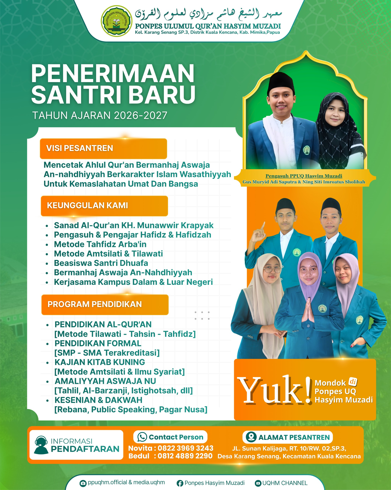

Bergabunglah menjadi bagian dari generasi ahlul Qur'an berkarakter Aswaja An-Nahdliyah di Pondok Pesantren Ulumul Qur'an Hasyim Muzadi — Mimika, Papua Tengah.
Dibuka 1 Maret 2026 • Ditutup 31 Juli 2026
Fokus penuh menghafal Al-Qur'an 30 juz dengan sanad muttashil ke KH. Munawwir Krapyak.
Kajian kitab kuning klasik tradisi NU dengan metode Amtsilati untuk dasar gramatika Arab.
Pendidikan formal SMP Terakreditasi dipadukan program tahfidz / kitab kuning di pesantren.
Pendidikan formal SMA Terakreditasi dipadukan program tahfidz / kitab kuning di pesantren.
📌 Dokumen bisa di-foto/scan dan dikirim via WhatsApp setelah submit form. Kuota terbatas — daftarkan segera sebelum gelombang ditutup.

Poster resmi Penerimaan Santri Baru PPUQHM
Bagi santri dari keluarga kurang mampu yang memiliki semangat tinggi belajar Al-Qur'an. Mengikuti filosofi NU "murah meriah, banyak berkah" — pendidikan berkualitas terbuka untuk semua kalangan.
Khusus untuk putra-putri asli daerah Papua sebagai komitmen PPUQHM mengembangkan kader dakwah lokal — sesuai motto pesantren: "Tandurane Abah, Tukule nang Papua".
Form tidak bekerja? Langsung chat saja: